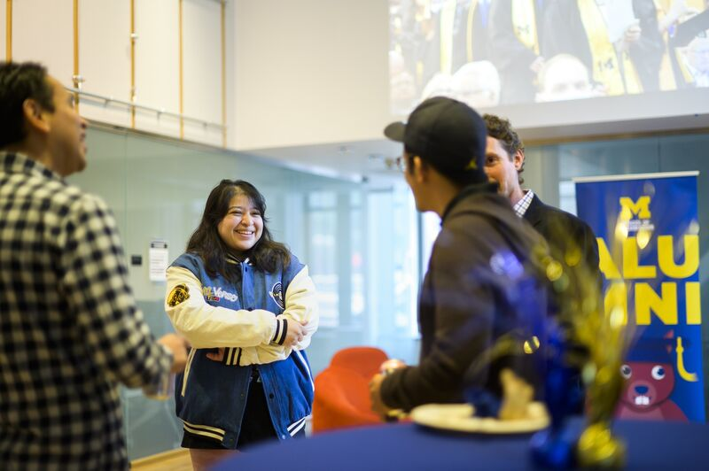
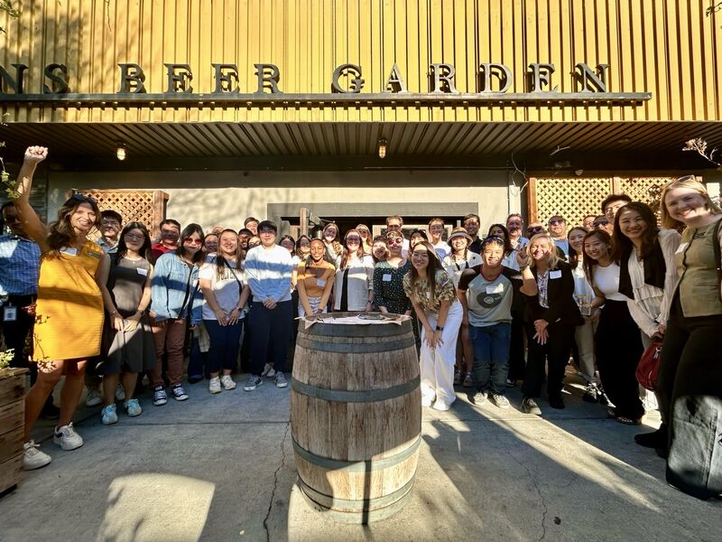
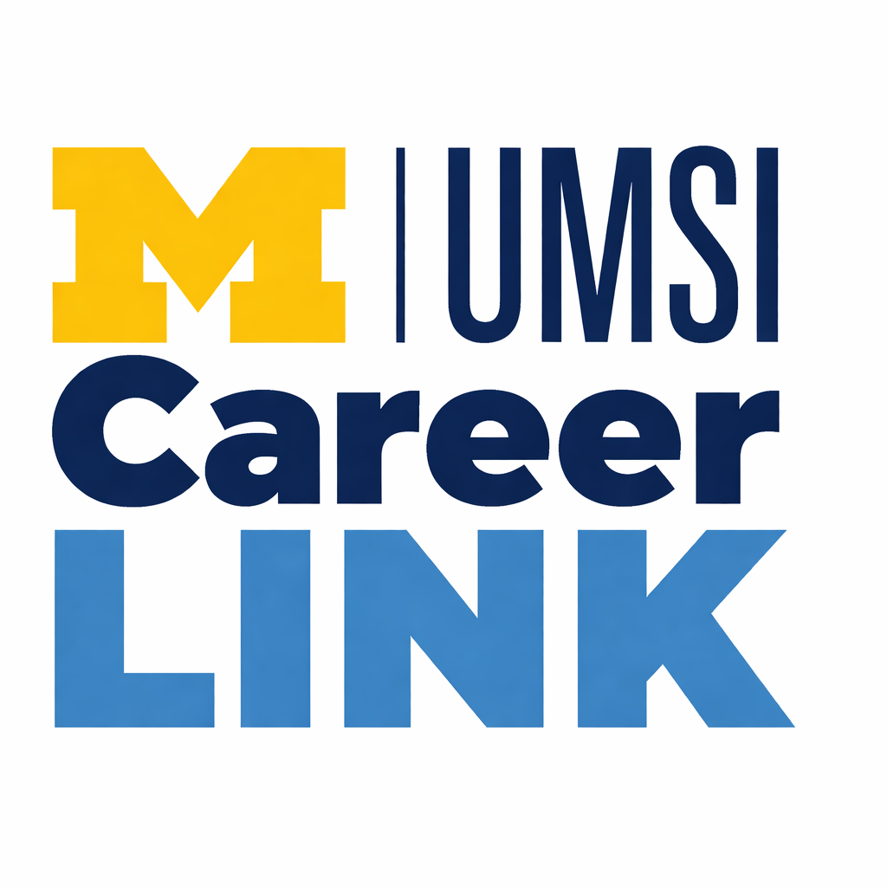

Connecting UMSI Alumni and Current Students
UMSI has a vast global alumni network of professionals working in a variety of fields. We strive to connect our alumni and students to strengthen this network and foster success amongst our graduates. Whether you wish to get connected for career advice, interview tips, or to get involved wih your local network, UMSI is eager to assist you.
Events & Tools
- On Campus Events: From career workshops, to homecoming celebrations, and alumni industry panels, UMSI hosts a variety of in person events on campus open to alumni and students where professional connections thrive.
- Off Campus Opportunities: All accross the globe UMSI graduates gather for numerous activities hosted by various alumni chapters. Such events include football watch parties, community service projects, and mixers where invaluable bonds and connections are formed.
- Career Tools: UMSI & The University of Michigan provides its students a with a wealth of resources to help them grow their networks and fulfill their career goals. Such tools include UMSI Career Link, CEW+, and the UM Career Center.